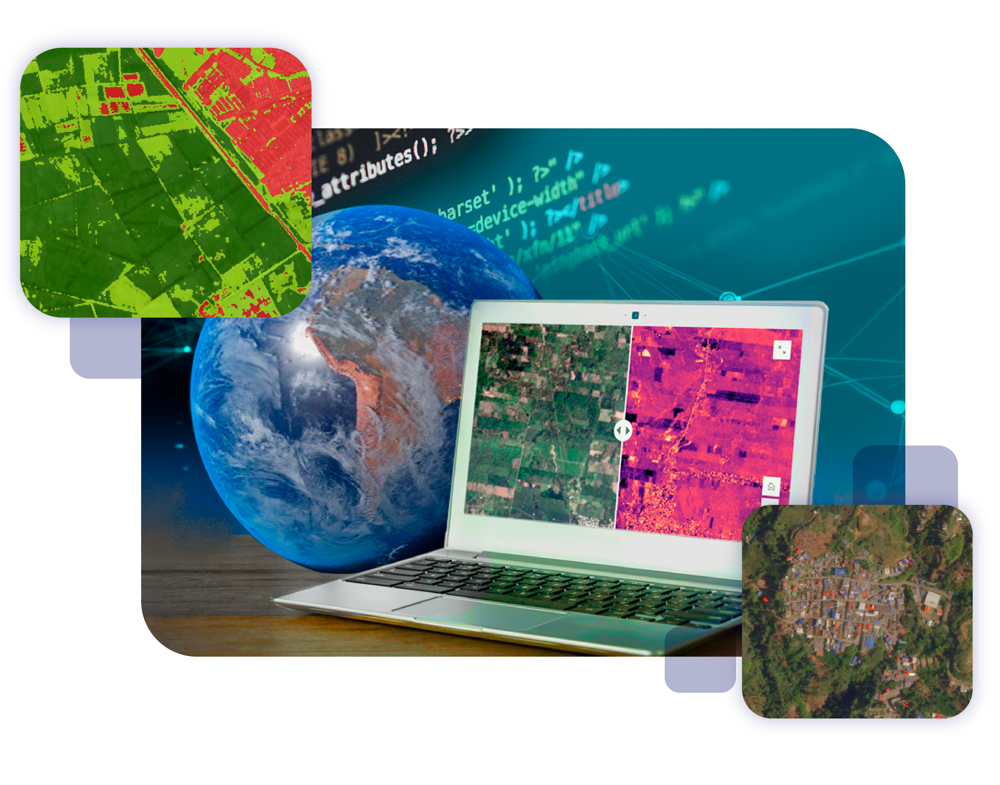
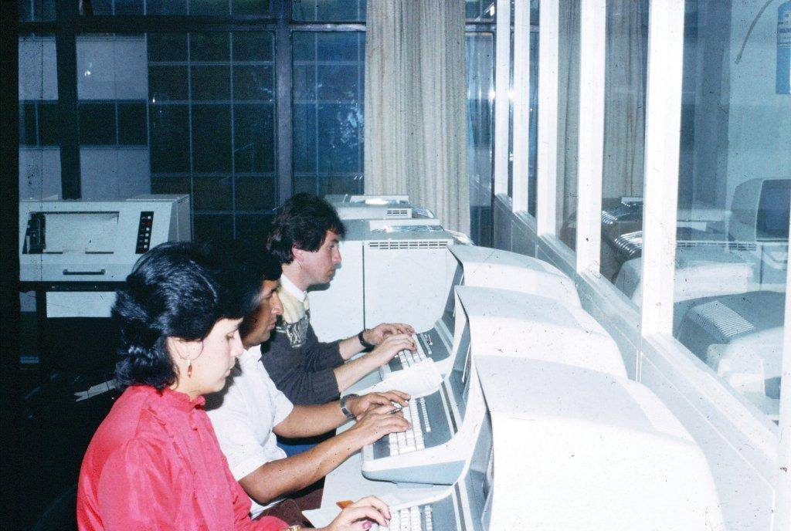
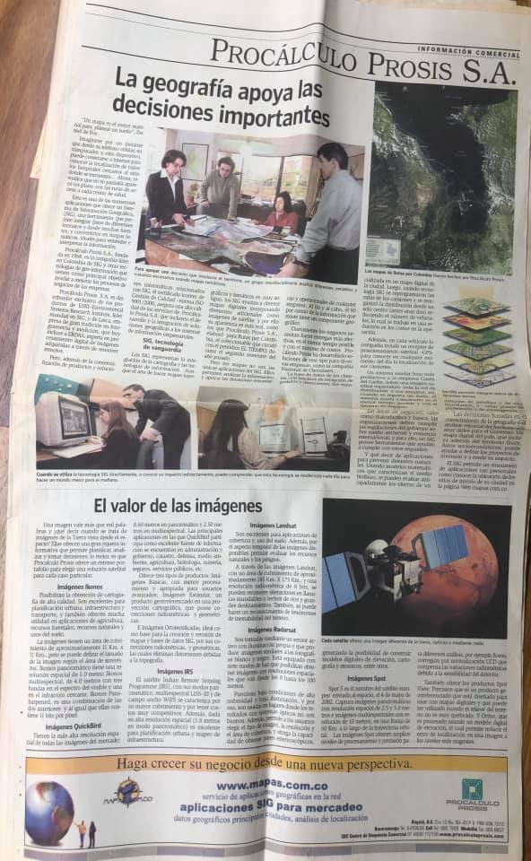

Lider global en imagenes satelitales diarias. Planet captura todo el planeta para hacer el cambio visible y accionable, con datos frecuentes y precisos integrables en flujos SIG.
Nosotros
Por que Procalculo
Procalculo es la opcion ideal para quienes buscan transformar informacion geografica en soluciones estrategicas.
Escribanos
Presencia regional
Colombia, Ecuador y Panama
Ofrecemos una vision geografica ajustada a cada cliente, facilitando decisiones claras y efectivas.
Valor diferencial
Una propuesta de valor basada en precision, experiencia y enfoque sectorial.
Proveemos informacion "justa, precisa y oportuna" para conocer, monitorear, analizar, planear y verificar.
Partners / aliados
Aliados tecnologicos que fortalecen nuestras soluciones y capacidades regionales.

Esri es el referente mundial en software GIS. Facilita soluciones geograficas de alto nivel, personalizacion por industria e implementacion rapida.
ENVI es una plataforma lider para procesar y analizar imagenes geoespaciales hiperespectrales, termicas, LiDAR y SAR, extrayendo informacion util de forma intuitiva.
Mapas.co aporta cartografia digital, georreferenciacion y analisis espacial local para complementar proyectos con contenido geografico ajustado a cada territorio.
Quienes somos
Procalculo es una empresa multilatina que construye y entrega informacion geografica precisa y oportuna.

Derivada de multiples fuentes de teledeteccion, combinada con tecnologia SIG y conocimiento experto.
Desde monitoreos ambientales hasta gestion urbana e infraestructura, sus soluciones se adaptan a cada desafio.
Con Procalculo no se obtiene solo informacion: se logra impacto real, resultados medibles y decisiones respaldadas por datos precisos en tiempo real.
Historia


Desde finales de la decada de 1960, Procalculo cimento su historia con la vision de un grupo de ingenieros colombianos que apostaron por la transformacion digital en el pais.


En 1968 se fundo "Programacion y Sistemas Ltda." y poco despues, en 1972, surgio "Procesamiento y Calculo Electronico S.A." Estas dos empresas sentaron las bases de lo que hoy conocemos como Procalculo Prosis.

En 2003, ambas companias se fusionaron para consolidar su liderazgo como proveedor exclusivo de soluciones SIG en Colombia, integrando ArcGIS, sensores satelitales y equipos GPS Trimble.
A lo largo de los anios, el enfoque se refino hacia una Vision Geografica que ofrece informacion territorial precisa y oportuna, adaptada a las necesidades de cada cliente.
Los servicios abarcan consultoria en gestion de datos geoespaciales, licenciamiento de imagenes satelitales y acompanamiento tecnico en Colombia, Ecuador y Panama.